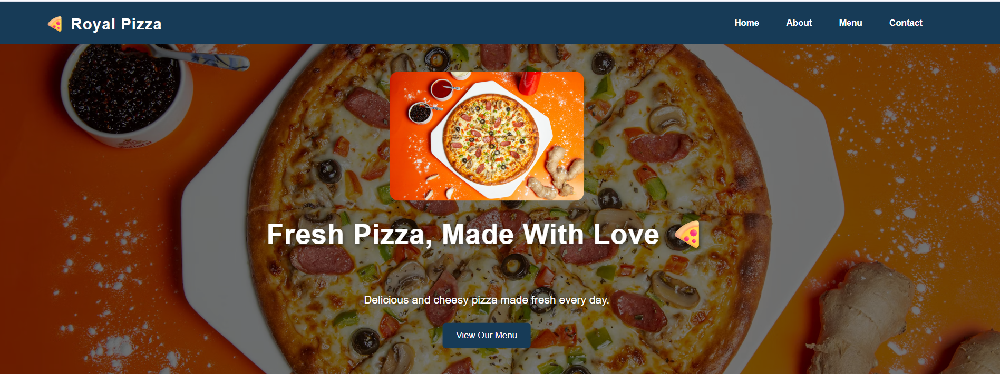
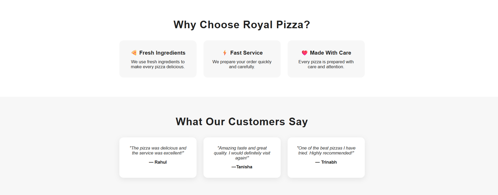
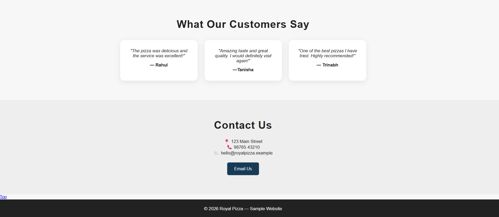

Project overview
Designed to feel clear, modern and memorable.
Organised food cards, clear pricing, strong imagery and a simple order-focused layout. This project is part of the Royal Pizza concept collection created for Ayan Digital Studio.
Responsive-firstDesigned to adapt cleanly across desktop and mobile screens.
Visual hierarchyImportant content is easy to spot without overwhelming the visitor.
Simple experienceNavigation and calls to action are kept straightforward and accessible.
Build details
What makes this project work
Design direction
Strong contrast, generous spacing, rounded cards and food-focused visuals create a friendly restaurant identity.
User experience
The layout guides visitors from discovering the restaurant to exploring its menu and getting in touch.
Project gallery
Real website screens from the project.
These screenshots are now included in the Ayan Digital Studio project showcase.



Toolkit
Skills used
HTMLCSSResponsive DesignUI DesignUX Structure
More from the studio
See the complete portfolio.
Explore the other Royal Pizza concepts and future creative projects from Ayan Digital Studio.
View all projects →